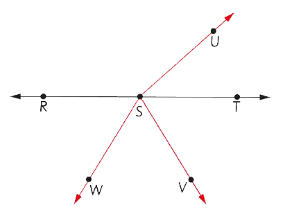

11.
Chunguza mchoro ufuatao, kisha jibu maswali yanayofuata.
(a) Kuna vipande vya mistari vingapi katika mchoro?
(b) Taja majina ya maumbo bapa yanayopatikana katika mchoro.
12.
Chunguza mchoro ufuatao, kisha jibu maswali yanayofuata:

(a) Taja majina ya nukta.
(b) Taja majina ya vipande vya mistari.
(c) Taja majina ya miale.
(d) Taja majina ya mistari minyoofu.